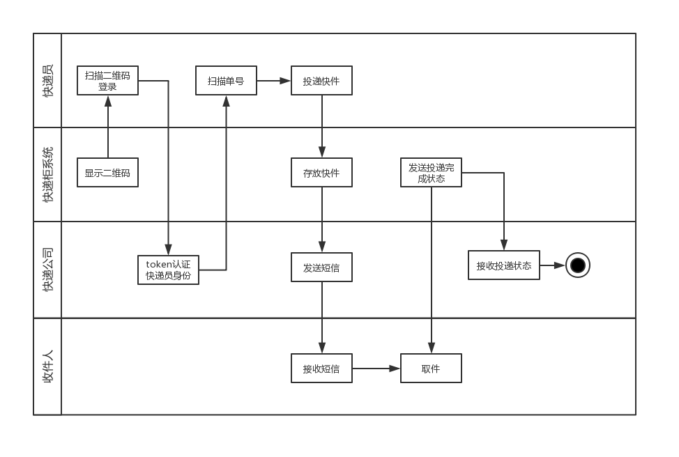
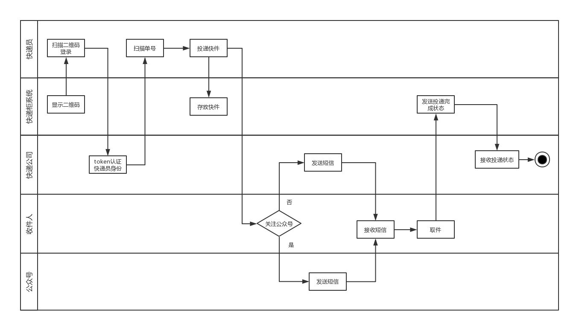

作业7
make_reservation
设计Asg-RH旅馆预定系统用例图
设计预定酒店活动图
设计快递柜系统业务场景泳道图
设计快递柜系统用例图
Asg-RH
Asg用例图
用户交互主要包括搜索旅馆、预定旅馆、购物车操作以及支付，对于这四种交互分别进行用例的完善和关联关系的设计：
- 搜索旅馆：搜索时需要输入城市、入住日期、离店日期三种必要信息，所以将这三种情况使用include关系与搜索用例关联，同时搜索结果支持排序，以及如果没有搜索结果则查看推荐，于是这两种用例使用extend关系关联：其中，排序功能支持不同的四种元素筛选，所以使用泛化关系丰富排序用例
- 预定旅馆：预定时必须的流程有搜索、选择旅店、选择房型以及确定预定，其中，选择旅店时需要支持查看详情，确认预定时需要完善全名和地址两种客户信息
- 购物车操作：购物车支持添加、移出、检查三种操作，其中，用户添加购物车时，首先需要完善个人信息
- 支付：支付过程中，用户必须进行的操作有选择支付账户，填写必要信息，其中，选择支付账户可以调用外部接口

Make reservation 活动图

快递系统
泳道图
业务1
整体流程：快递员登录->存放快递->短信平台发送短信->收件人凭短信信息取件

业务2
整体流程：快递员扫描二维码登录->公司认证身份->快递员扫描单号->存放快递->快递公司发送短信->收件人凭短信信息取件

业务3
整体流程：快递员扫描二维码登录->公司认证身份->快递员扫描单号->存放快递->判断用户是否关注公众号->(快递公司/公众号)发送短信->收件人凭短信信息取件

用例图

>